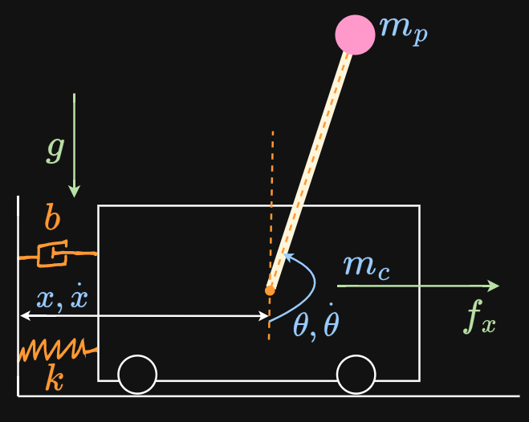
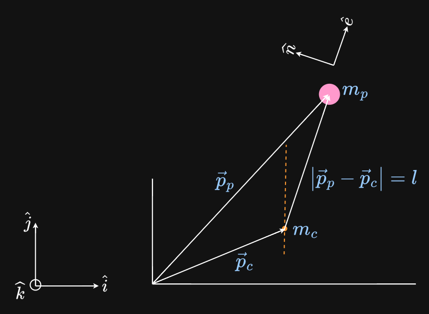
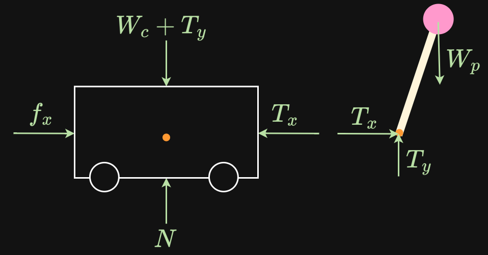

The entire mass of the pole is collapsed to a point at the end of it to keep the maths simple. A motor applies a horizontal force $f_x$.

Scenario

The position vectors are defined in the inertial world frame [$\hat{i}, \hat{j}, \hat{k}$]. The body frame [$\hat{n},\hat{e}$] consists of unit vectors attached to the pole that only specify direction.
First DOF
The state vector $\begin{bmatrix} x \\ \dot{x} \end{bmatrix}$ is used to describe the horizontal motion of the cart.
Second DOF
The state vector $\begin{bmatrix} \theta \\ \dot{\theta} \end{bmatrix}$ is used to describe the angular rotation of the pole.
Description
Since there are 2 DOFs, 2 free body diagrams are required.

Drawing of all the forces that keep the cart and the pole connected to the world.
$$\begin{array}{cclc}
N &:& \text{Normal force of the track pushing up on the cart} \\
f_x &:& \text{Horizontal force of the motor} \\
W_c &:& \text{Weight of the cart} \\
W_p &:& \text{Weight of the pole} \\
T_x, T_y &:& \text{2 components of the tension in the rod (constraint force or conduct force)} \\
\end{array}$$
The same tension force is applied in an equal and opposite way to the pole at the point of connection to the cart.